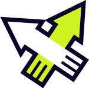
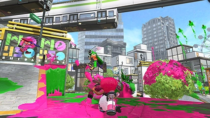
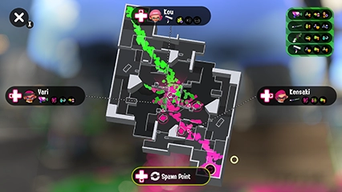
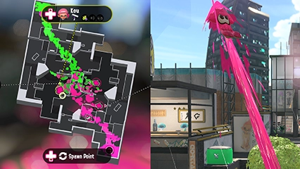
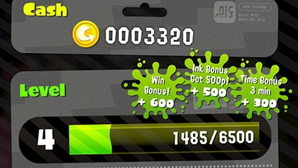

Combates amistosos

En los combates amistosos, cada equipo contará con tres minutos para cubrir el escenario de tinta. Ganará el equipo que logre entintar más territorio.
Procura cubrir tanto terreno como puedas para contribuir a la victoria de tu equipo.
Procura cubrir tanto terreno como puedas para contribuir a la victoria de tu equipo.
Armas especiales

Conforme entintes territorio, tu medidor especial se irá rellenando.
Cuando alcance el máximo, oprime para activar el arma especial.
Ten en cuenta que tu medidor especial se reducirá si te revientan. Trata de utilizar el arma especial en el momento oportuno para aprovechar su potencia.
Cuando alcance el máximo, oprime para activar el arma especial.
Ten en cuenta que tu medidor especial se reducirá si te revientan. Trata de utilizar el arma especial en el momento oportuno para aprovechar su potencia.
Mapa de territorios

Recuerda que puedes oprimir para consultar el mapa de territorios.
Resulta útil para ver de un solo vistazo cuánto territorio ha cubierto cada equipo.
¡Además, puedes seguir jugando mientras miras el mapa!
Resulta útil para ver de un solo vistazo cuánto territorio ha cubierto cada equipo.
¡Además, puedes seguir jugando mientras miras el mapa!
Supersalto

Si tienes el mapa abierto, puedes seleccionar un compañero de equipo con y luego oprimir para dar un supersalto hasta su posición.
Antes de decidir adónde quieres desplazarte, fíjate bien en la distribución de territorios en el escenario; ¡así evitarás aterrizar en las garras del enemigo!
Ten en cuenta que también puedes usar para elegir hacia qué compañero vas a dar un supersalto.
Antes de decidir adónde quieres desplazarte, fíjate bien en la distribución de territorios en el escenario; ¡así evitarás aterrizar en las garras del enemigo!
Ten en cuenta que también puedes usar para elegir hacia qué compañero vas a dar un supersalto.
Dinero y experiencia

Para obtener dinero y experiencia, quédate en el combate hasta el último momento.
Conforme obtengas más experiencia y subas de nivel, podrás acceder a nuevas armas en la tienda.
Si quieres destacar en los combates, es esencial contar con un buen surtido armamentístico.
Conforme obtengas más experiencia y subas de nivel, podrás acceder a nuevas armas en la tienda.
Si quieres destacar en los combates, es esencial contar con un buen surtido armamentístico.